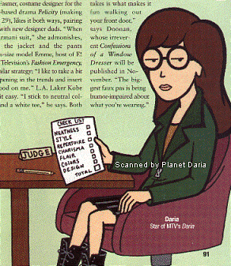

Daria appeared in the September 14, 1998 issue of People Weekly as a judge of the best and worst dressed people of 1998. Here are some of her comments:
- "Both designer Amsale Aberra (known professionally by her first name) and MTV's cheeky teenage fashion toon Daria are inspired by celebrities. Amsale says she adores the "extremely chic" Audrey Hepburn, while Daria recently told W that one of ther influences is "Imelda Marcos... and in the area of color, Gumby."
- About Tyra Banks (best dressed): "'This is what she looks like when she's not trying,' complains Daria of the Urchin sweater set and painter on Mark Wong Nark pants that Banks sported at Madison Square Garden in New York in February. 'I have to go lie down.'" "'Did you ever notice,' asks MTV's Daria, 'how no other woman will get near her in a picture?'" "Daria points out, 'Women appreciate the graceful lines; men appreciate the nipples.'"
- About Cameron Diaz (best dressed): "'She looks great,' pronounces MTV's Daria, 'but I'd hate to see her tan lines later.'" (about picture of Cameron wearing crocheted dress)
- About Sean "Puffy" Combs (best dressed): "Still, warns MTV's Daria: 'Tell your waiter to hold the ketchup.'" (about Puffy's all white suit)
- About Marie-Chantal of Greece (best dressed): "'Who does she think she is, a princess?' asks MTV's Daria. 'Oops, never mind.'" (Marie-Chantal is a princess) "Daria knows the difference between the princess and the rest of us. 'Ho hum. Another family barbecue.'" (about a London gala concert in honor of Queen Elizabeth and Prince Philip) "Adds Daria, 'She really has this whole royal thing down, doesn't she?'"
- About Gwyneth Paltrow (best dressed): "Even MTV's Daria was impressed. 'Can't fault this,' she says. 'Dammit.'"
- About Brandy (best dressed): Even MTV's Daria finds little wrong with Brandy's style, but she can't resist a dig. 'Young. Perky. Upbeat,' she says. 'I hate that.'"
- About Lorri Morgan (worst dressed): "MTV's Daria muses that the singer 'strikes a delicate balance between cheap and tawdry,'" "Daria calls the fox-trimmed Thierry Mugler suit Morgan wore shopping in Manhattanlast fall That Girl: The Streetwalker Years."
- About Carmen Electra (worst dressed): "Adds MTV's laconic Daria: 'I'd be kicking myself too.'"
- About Ethan Hawke (worst dressed): "MTV's Daria thinks Hawke was so rushed to get to January's Great Expectations premiere in L.A. 'he didn't notice he'd put on his little brother's pants.'"
- About Alex Kingston (worst dressed): "They show 'that she's shaped like a normal human being,' says MTV's Daria. 'How refreshing!'" "At least, says Daria, 'she doesn't have to worry about running into someone else with the same outfit.'"
- About Billy Bob Thornton (worst dressed): "'He's in no hurry to shed that french-fried-pertaters image,' says MTV's Daria of Arkansas actor's garb at an L.A. do last September." "'I think I saw Liza Minnelli in this once.'"
- About Peta Wilson (worst dressed): "'Power suit meets bondage rig. Power suit loses.' That's the verdict of MTV's Daria on Wilson's Thierry Mugler at a USA Network preview in May.
- About Sigourney Weaver (worst dressed): "MTV's Daria suggests,, 'In Alien 5, she'll use this to scare the creatures into surrendering.'" "Daria has a theory: 'Stephen King designed this outfit. It's slowly strangling her.'" "'See the arms?' asks Daria. 'She's trying to convince us she chose this outfit while sleepwalking.'"
- About Kathy Griffin (worst dressed): "Griffin's mixed message at the There's Something About Mary premiere in L.A. in July confuses MTV's Daria, who asks, 'Is this one outfit or three?'" "'I don't love the dress, but she gets points for the post,' says Daria."
- About Emma Thompson (worst dressed): "'Just a few more layers and the whole thing will come together, I swear,' says MTV's Daria of Thompson's togs at LAX last March." "And that's not a bracelet on her wrist, says Daria. 'She's been handcuffed by the fashion police.'" "Daria's take: 'She's on the way to the cupboard to get her poor dog a bone.'"

|